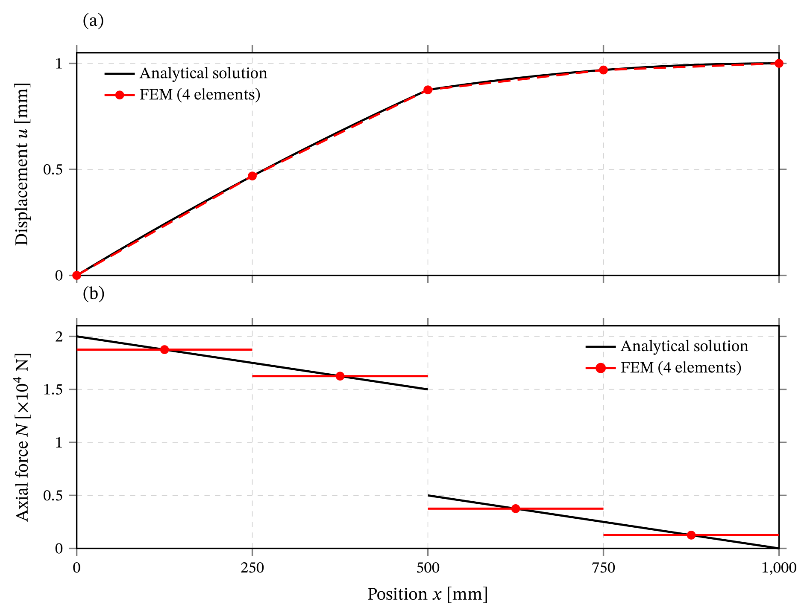

11 Implementing a finite element analysis of a one-dimensional axial bar
Course edition: 2026–27
Starting point: 2026-27/S04-regression-tests
Target snapshot: 2026-27/S05-four-element-bar-analysis
Construct and verify a four-element finite element analysis of a uniform axial bar subject to distributed and concentrated loading.
The previous chapters derived the weak form of the one-dimensional axial bar and the corresponding element arrays for the two-node linear element. This chapter uses those element quantities to construct a complete finite element analysis.
11.1 The bar problem
Consider a uniform axial bar with
\[ L=1000\ \mathrm{mm}, \qquad E=100000\ \mathrm{N/mm^2}, \qquad A=100\ \mathrm{mm^2}, \]
yielding
\[ EA=1.0\times10^7\ \mathrm{N}. \]
The bar is fixed at the left end and free at the right end:
\[ u(0)=0, \qquad N(L)=0. \]
A uniform distributed axial load
\[ q=10\ \mathrm{N/mm} \]
acts in the positive \(x\) direction, together with a concentrated axial force
\[ P=10000\ \mathrm{N} \]
applied at
\[ x=\frac{L}{2}=500\ \mathrm{mm}. \]
The bar is discretized using four equal two-node linear elements, each with length \(L_e=250\ \mathrm{mm}\).
Unlike the deliberately nonsequential spring example in Part II, the global node numbers here follow the geometric order:
| node | 1 | 2 | 3 | 4 | 5 |
|---|---|---|---|---|---|
| \(x\) [mm] | 0 | 250 | 500 | 750 | 1000 |
and the elements are connected to nodes according to the connectivity table
element 1: [1, 2]
element 2: [2, 3]
element 3: [3, 4]
element 4: [4, 5]There is one displacement degree of freedom per node. The concentrated force \(P\) therefore acts directly at global degree of freedom 3.
11.2 Element quantities
The two-node linear-bar stiffness matrix derived in the previous chapter is equal to
\[ \mathbf{K}_e = \frac{EA}{L_e} \begin{bmatrix} 1 & -1\\ -1 & 1 \end{bmatrix} = 40000 \begin{bmatrix} 1 & -1\\ -1 & 1 \end{bmatrix} \ \mathrm{N/mm}. \]
The uniform distributed load produces the consistent element load vector
\[ \mathbf{f}_e^q = \frac{qL_e}{2} \begin{bmatrix} 1\\1 \end{bmatrix} = \begin{bmatrix} 1250\\1250 \end{bmatrix} \ \mathrm{N}. \]
The distributed and concentrated loads are treated differently in the finite element implementation:
- the distributed load \(q\) produces an element load vector that is assembled through the element loop;
- the concentrated force \(P\) is already a global nodal load and is added directly to the corresponding entry of the global load vector.
11.3 Start from a verified MiniFEM example
S04 already provides a verified two-spring implementation organized into reusable FEM definitions, an executable benchmark (the simulation driver), and regression tests. Rather than starting the axial-bar implementation from an empty Julia file, use that verified structure as the starting point.
Copy examples/two_springs_fem.jl to examples/axial_bar_fem.jl and adapt its FEM definitions to the current two-node axial-bar formulation. Use examples/two_springs.jl as the organizational model for the new simulation driver, examples/four_element_axial_bar.jl.
The driver will define the mesh, properties, loads, and prescribed displacements, solve the axial-bar problem, recover the element response, carry out the independent analytical verification, and present the results.
The spring and bar problems share the same broad finite element workflow, so several ideas and procedures from the verified spring implementation can be retained:
- global quantities \(\mathbf K\), \(\mathbf u\), and \(\mathbf f\);
- connectivity and local-to-global DOF mapping;
- an element loop with scatter assembly;
- solution of the global linear system; and
- comparison with independently obtained reference results.
The global workflow is similar, but the axial-bar formulation introduces several new operations:
- the prescribed spring stiffness \(k_e\) is replaced by the bar stiffness determined from \(E_e\), \(A_e\), and \(L_e\);
- the element length \(L_e\) must be computed from the nodal coordinates, while \(E_e\) and \(A_e\) are supplied as element data;
- the consistent distributed-load vector \(\mathbf f_e\) is assembled together with \(\mathbf K_e\);
- the concentrated force \(P\) is added as a global nodal load;
- prescribed displacements are handled through free/constrained partitioning;
- reactions are recovered from the complete assembled equilibrium system; and
- displacement increments, strains, stresses, and axial forces are recovered from the computed nodal displacements.
The organization of the source code also develops beyond the two-spring example. In S03, solve_two_springs(k_1, k_2, applied_force) was deliberately specific to one fixed topology and support configuration: its purpose was to make an already-known analysis callable.
The axial-bar analysis is different. The mesh, element properties, loads, and prescribed displacements are now supplied by the simulation driver, while axial_bar_fem.jl contains the operations associated with the current two-node axial-bar formulation:
four_element_axial_bar.jl
defines what problem is being solved (simulation driver)
axial_bar_fem.jl
defines how the current two-node axial-bar analysis is performedThese functions can be reused for other problems based on the current two-node axial-bar formulation. Operations that may also be shared with the spring implementation have deliberately not been extracted yet. Identifying and refactoring those genuinely common operations is deferred to the next implementation task.
11.4 Model data and global arrays
The implementation now separates the definition of the particular benchmark from the finite element operations used to analyze it. We will first define the complete problem in the simulation driver and then construct the axial-bar functions used to assemble, solve, and post-process the finite element model.
In the simulation driver four_element_axial_bar.jl, define the complete benchmark data before solving the problem: L, E, A, q, P, node_coordinates, element_connectivity, element_E, element_A, element_q, applied_forces, constrained_dofs, and prescribed_displacements. Use the tuple representation [(3, P)] for the concentrated load. This keeps all problem-specific data visible where the simulation itself is defined.
The global stiffness matrix and load vector will be created inside the callable analysis from these supplied data. Since the mesh contains five nodes and there is one displacement DOF per node, the global stiffness matrix and load vector will have dimensions \(5\times5\) and \(5\), respectively.
11.4.1 Axial-bar finite element functions
The syntax for defining Julia functions and their arguments was introduced in Section 2.3.6. The finite element operations for the current two-node axial-bar formulation are collected in axial_bar_fem.jl.
Construct the following functions using these interfaces:
bar_stiffness(E_e, A_e, L_e)
bar_distributed_load(q_e, L_e)
assemble_axial_bar!(
K,
f,
node_coordinates,
element_connectivity,
element_E,
element_A,
element_q,
)
solve_axial_bar(
node_coordinates,
element_connectivity,
element_E,
element_A,
element_q,
applied_forces,
constrained_dofs,
prescribed_displacements,
)
recover_axial_bar_response(
node_coordinates,
element_connectivity,
element_E,
element_A,
u,
)bar_stiffness constructs the element stiffness matrix, while bar_distributed_load constructs the consistent element load vector. assemble_axial_bar! performs the element loop and scatter-adds both contributions to the global arrays.
solve_axial_bar derives the problem size from the supplied data, initializes and assembles the global system, adds the applied nodal forces, partitions the system according to the prescribed displacements, and solves for the unknown nodal displacements. After reconstructing the complete displacement vector, it also recovers the reaction forces from the assembled global equilibrium system. It returns u and reactions.
Reaction recovery is a post-processing operation, but it is kept within solve_axial_bar because it depends directly on the complete assembled stiffness matrix and load vector that are already available there after the partitioned solution. It can therefore be regarded as global equilibrium post-processing.
The separate function recover_axial_bar_response performs the element-level post-processing. From the nodal displacement vector u, it recovers the element displacement increments, strains, stresses, and axial forces. These quantities are specific to the current two-node axial-bar formulation, so the function is not intended as a generic post-processing interface.
This organization develops the structure already introduced with the two-spring example. The scalar spring relation spring_stiffness(k_e) is replaced by bar_stiffness(E_e, A_e, L_e), a consistent distributed-load function is added, and the assembly procedure now contributes to both the global stiffness matrix and the global load vector. The fixed spring analysis is also replaced by an axial-bar solver whose mesh, element properties, loads, and prescribed displacements are supplied by the simulation driver.
Inside assemble_axial_bar!, derive the number of elements from the connectivity matrix. Inside solve_axial_bar, derive the number of nodes from the coordinate vector. Since there is one displacement DOF per node, the total number of DOFs follows directly from the number of nodes.
The required array initialization and indexing syntax has already been introduced in Chapter 2. As an initial checkpoint, confirm that the connectivity matrix has four rows, the coordinate vector has five entries, and the assembled global system contains five displacement DOFs.
11.5 Element calculation and assembly
With the model data and function interfaces established, we can now implement the element calculations and assemble the global stiffness matrix and load vector.
In the preceding chapter, local-to-global assembly was expressed algebraically using the extraction matrix \(\mathbf C_e\). In the implementation, the same mapping is represented by dof_map: the scatter loops perform the corresponding local-to-global assembly without explicitly constructing \(\mathbf C_e\).
Inside assemble_axial_bar!, keep the element loop and the local-to-global scatter operation explicit. For each element:
- identify the two global nodes from the corresponding row of
element_connectivity; - extract their coordinates and the element properties \(E_e\), \(A_e\), and \(q_e\);
- compute the element length \(L_e\);
- use
bar_stiffnessandbar_distributed_loadto construct \(\mathbf K_e\) and \(\mathbf f_e\); - form the local-to-global DOF map, which has the same entries as the corresponding connectivity row only because this model has one displacement DOF per node;
- loop over the local index \(i\) and scatter-add the corresponding entry of \(\mathbf f_e\) into the global load vector;
- within the same loop over \(i\), loop over the local index \(j\) and scatter-add the entries of \(\mathbf K_e\) into the global stiffness matrix.
At the end of the element loop, the global load vector contains the assembled contribution of the distributed load only. For the present mesh, this contribution is
\[ \mathbf f_{\mathrm{distributed}} = \begin{bmatrix} 1250\\ 2500\\ 2500\\ 2500\\ 1250 \end{bmatrix} \ \mathrm{N}. \]
The two end nodes receive a contribution from one element, whereas each interior node is shared by two elements and receives one contribution from each. This explains why the assembled distributed load at an interior node is twice that at an end node.
The concentrated force is treated differently because it is already specified as a global nodal load. In the simulation driver it is represented as
applied_forces = [(3, P)]and solve_axial_bar adds each supplied (dof, value) pair directly to the corresponding entry of the assembled global load vector.
After adding \(P\) at global DOF 3, the complete physical load vector becomes
\[ \mathbf{f} = \begin{bmatrix} 1250\\2500\\12500\\2500\\1250 \end{bmatrix} \ \mathrm{N}. \]
Use the distributed-load vector and the complete physical load vector as checkpoints before proceeding to the prescribed-displacement treatment and solution of the global system.
After assembling the complete physical system, the prescribed displacements can be imposed without altering the assembled arrays. In the present implementation, this is achieved by extracting the reduced matrices and vectors associated with the free and constrained DOFs. The original global system is therefore preserved, at the cost of allocating these reduced arrays.
11.6 Prescribed displacement partition
The treatment of prescribed displacements has already been developed in the preceding theory chapters.
The weak-form chapter introduced the distinction between the admissible trial field and the homogeneous variations associated with essential boundary conditions, including the extension to nonzero prescribed displacement values.
The two-node linear bar-element chapter then translated this distinction into the assembled algebraic system by partitioning the global degrees of freedom into free and prescribed sets. In particular, it established
\[ \mathbf K_{ff}\mathbf u_f + \mathbf K_{fc}\mathbf u_c = \mathbf f_f, \]
or equivalently,
\[ \boxed{ \mathbf K_{ff}\mathbf u_f = \mathbf f_f-\mathbf K_{fc}\mathbf u_c. } \]
We now implement this procedure in solve_axial_bar.
Although the present benchmark has the homogeneous condition
\[ u(0)=0, \]
the implementation retains the general form so that nonzero prescribed displacements, as considered in one of the exercises in this chapter, can be handled without changing the solution procedure.
To implement the partitioned solution, proceed as follows:
identify the constrained DOFs and their prescribed displacement values. Start from the boundary conditions of the problem and ask:
- which nodal displacement is prescribed?
- which global DOF corresponds to that node?
- what value is prescribed there?
Store the resulting DOF numbers in
constrained_dofsand the corresponding displacement values, in the same order, inprescribed_displacements;construct the complementary free-DOF list with
setdiff;extract \(\mathbf K_{ff}\), \(\mathbf K_{fc}\), and \(\mathbf f_f\) using the free and constrained index lists;
solve the reduced system for \(\mathbf u_f\);
initialize the complete displacement vector \(\mathbf u\);
insert the free and prescribed displacement values into their corresponding global positions.
The setdiff, vector-indexing, matrix-indexing, and selected-entry assignment operations required by this implementation were introduced in Chapter 2.
For this benchmark, \(u(0)=0\) is prescribed at node 1. Since there is one displacement DOF per node, node 1 corresponds directly to global DOF 1.
After reconstructing the complete displacement vector, you should obtain
\[ \mathbf u= \begin{bmatrix} 0\\ 0.46875\\ 0.875\\ 0.96875\\ 1.0 \end{bmatrix} \ \mathrm{mm} \]
to floating-point roundoff.
Here \(\mathbf u_c=\mathbf 0\), so the term \(-\mathbf K_{fc}\mathbf u_c\) vanishes. Its presence in the implementation is nevertheless essential for problems with nonzero prescribed displacements.
The reduced arrays created by indexing, such as K[free_dofs, free_dofs], are copies rather than views of the original global system. This is the storage cost associated with the simple partitioning implementation used here: the assembled matrices and vectors remain unchanged, while separate arrays are created for the reduced problem.
For this small problem, the additional storage is negligible and the explicit partitioning keeps the algebra closely aligned with the equations. Larger finite element analyses normally use sparse global matrices and more carefully designed constraint handling, where both memory use and solution cost become important considerations.
11.7 Reaction recovery
Unlike the S04 two-spring implementation, the partitioning procedure used here does not modify the assembled stiffness matrix or load vector. The complete physical equilibrium system therefore remains available after the displacement solution has been reconstructed, so no separate copy of the physical stiffness matrix is required for reaction recovery.
Evaluate the global equilibrium residual by means of
\[ \mathbf r = \mathbf K\mathbf u - \mathbf f. \]
At the free DOFs, the entries of \(\mathbf r\) should be zero to floating-point roundoff because the corresponding equilibrium equations have been satisfied. At the constrained DOFs, the residual entries are the support reactions.
Extract the reaction forces using the constrained-DOF list. For the present problem, the reaction at the left support should be
\[ R=-20000\ \mathrm{N}. \]
As an additional equilibrium check, verify that the reaction balances the total applied axial load:
\[ R+qL+P=0. \]
11.8 Element post-processing
Once the nodal displacement vector \(\mathbf u\) has been computed, the element response can be recovered directly from the finite element interpolation.
Implement this recovery inside the function recover_axial_bar_response. Initialize one result vector for each element quantity: displacement increment, strain, stress, and axial force.
This recovery loop follows the same element-by-element pattern already used during assembly. The connectivity row identifies the two nodes of the current element. Those node numbers can then be used to extract both the element coordinates from node_coordinates and the corresponding nodal displacements from the complete solution vector u. The vector-indexing operation needed to select entries associated with an index list has already been introduced in Chapter 2.
For each element:
- identify its two global nodes from the corresponding connectivity row;
- use those node numbers to extract the nodal coordinates and the two entries of the complete displacement vector \(\mathbf u\), and extract the corresponding element properties;
- compute the element length \(L_e\) and the displacement increment \(\Delta u_e=u_2^e-u_1^e\);
- recover the element strain, stress, and axial force from \(\varepsilon_e^h=\Delta u_e/L_e\), \(\sigma_e^h=E_e\varepsilon_e^h\), and \(N_e^h=A_e\sigma_e^h\);
- store each recovered quantity in the entry associated with the current element.
For the present problem, the expected element displacement increments are
\[ [0.46875,\ 0.40625,\ 0.09375,\ 0.03125]\ \mathrm{mm}. \]
The corresponding strain, stress, and axial-force values will be checked later against the independent analytical solution.
The simulation driver calls the recovery function after the solve:
(
element_displacement_increments,
element_strain,
element_stress,
element_axial_force,
) = recover_axial_bar_response(
node_coordinates,
element_connectivity,
element_E,
element_A,
u,
)11.9 Analytical solution and verification
The finite element solution can now be verified against an independent analytical solution of the bar problem.
Let
\[ a=\frac{L}{2} \]
denote the position of the concentrated force. Away from \(x=a\), axial equilibrium gives
\[ N'(x)+q=0, \qquad N(L)=0. \]
Accounting for the concentrated force at \(x=a\), the exact axial force is
\[ N(x)= \begin{cases} q(L-x)+P, & 0\leq x<a,\\ q(L-x), & a<x\leq L. \end{cases} \]
The axial force therefore has the expected jump across the point load,
\[ N(a^+)-N(a^-)=-P. \]
Using
\[ N=EAu' \]
together with the prescribed displacement \(u(0)=0\) gives
\[ u(x)= \begin{cases} \dfrac{q(Lx-x^2/2)+Px}{EA}, & 0\leq x\leq a,\\[6pt] \dfrac{q(Lx-x^2/2)+Pa}{EA}, & a\leq x\leq L. \end{cases} \]
Axial force and displacement field are plotted in Figure 11.1 together with the numerical solution.

Evaluating the exact displacement at the mesh nodes gives
\[ \mathbf u_{\mathrm{exact}} = \begin{bmatrix} 0\\ 0.46875\\ 0.875\\ 0.96875\\ 1.0 \end{bmatrix} \ \mathrm{mm}. \]
Construct the analytical verification independently of the finite element calculation. Start by defining \(a=L/2\) and computing the axial rigidity \(EA\) from the benchmark data. Then evaluate the appropriate branch of the analytical displacement \(u(x)\) at each mesh node.
For the axial-force comparison, construct the midpoint coordinate of each element from its two nodal coordinates and evaluate the corresponding branch of \(N(x)\) at that position. Finally, obtain the exact support reaction from overall equilibrium and compare the analytical displacement, axial-force, and reaction values with the finite element results. These analytical calculations are used only for verification; they do not contribute to the construction or solution of the finite element system.
For the present problem, overall equilibrium gives
\[ R=-(qL+P)=-20000\ \mathrm{N}, \]
which should agree with the reaction recovered from the assembled finite element system.
The finite element displacement increments are
\[ [0.46875,\ 0.40625,\ 0.09375,\ 0.03125]\ \mathrm{mm}, \]
giving the constant element strains
\[ \boldsymbol{\varepsilon}^h = [1.875,\ 1.625,\ 0.375,\ 0.125]\times10^{-3}, \]
the corresponding stresses
\[ \boldsymbol{\sigma}^h = [187.5,\ 162.5,\ 37.5,\ 12.5]\ \mathrm{N/mm^2}, \]
and the element axial forces
\[ \mathbf N^h = [18750,\ 16250,\ 3750,\ 1250]\ \mathrm{N}. \]
For this particular problem, the recovered finite element axial force in each element agrees with the exact axial force evaluated at that element’s midpoint, \(x=125\), \(375\), \(625\), and \(875\ \mathrm{mm}\).
This agreement follows from the structure of the exact solution. The concentrated force is located exactly at mesh node 3, so no element contains the force discontinuity in its interior. Each element therefore lies entirely within one smooth branch of the exact solution. Within each branch, the exact displacement is quadratic and the exact strain is linear.
A two-node linear bar element has constant strain,
\[ \varepsilon_e^h = \frac{u_2^e-u_1^e}{L_e}, \]
which is the secant slope between its two nodal displacement values. For a quadratic displacement field, this secant slope is equal to the exact derivative at the element midpoint. Hence, for this problem,
\[ \varepsilon_e^h = \varepsilon(x_{e,\mathrm{mid}}), \]
and, because \(E\) and \(A\) are constant,
\[ N_e^h = N(x_{e,\mathrm{mid}}). \]
This midpoint agreement is a special property of the present problem and should not be interpreted as general exactness of the recovered strain, stress, or axial force.
Similarly, although the finite element and exact displacement values coincide at the mesh nodes in this problem, the finite element displacement field is piecewise linear whereas the exact displacement is piecewise quadratic. Therefore, in general,
\[ u^h(x)\neq u(x) \]
at points inside the elements.
The shared nodal DOFs ensure that \(u^h\) remains continuous across element boundaries, while its derivative, and hence the element strain and stress, may be discontinuous.
The preceding theory chapters introduced the Galerkin approximation. We can now use one of its important consequences to explain the exact nodal agreement observed in this problem.
The exact solution \(u\) satisfies the weak form for every admissible finite element test function,
\[ a(w^h,u)=\ell(w^h) \qquad \forall\,w^h\in V^h, \]
while the finite element solution satisfies
\[ a(w^h,u^h)=\ell(w^h) \qquad \forall\,w^h\in V^h. \]
Subtracting the two equations gives
\[ a(w^h,u-u^h)=0 \qquad \forall\,w^h\in V^h. \]
This property is called Galerkin orthogonality: the finite element error \(u-u^h\) is orthogonal to the finite element test space with respect to the bilinear form \(a(\cdot,\cdot)\).
Now let \(I_h u \in S^h\) denote the piecewise-linear interpolant of the exact solution \(u\) at the mesh nodes, and let \(a_e(\cdot,\cdot)\) denote the contribution of element \(\Omega_e\) to the bilinear form.
For an element \(\Omega_e = [x_1,x_2]\) with constant \(EA\), the derivative \((w^h)'\) is constant on \(\Omega_e\). Therefore,
\[ \begin{aligned} a_e(w^h,u-I_hu) &= \int_{x_1}^{x_2} (w^h)'EA \left[ u'-(I_hu)' \right]\,dx \\ &= (w^h)'EA \left[ u(x_2)-u(x_1) - \left(I_hu(x_2)-I_hu(x_1)\right) \right] \\ &=0, \end{aligned} \]
because \(I_hu\) has the same values as \(u\) at the two element nodes. Summing over all elements gives
\[ a(w^h,u-I_hu)=0 \qquad \forall\,w^h\in V^h. \]
Combining this relation with Galerkin orthogonality gives
\[ a(w^h,u^h-I_hu)=0 \qquad \forall\,w^h\in V^h. \]
Since \(u^h\) and \(I_hu\) satisfy the same prescribed displacement, their difference satisfies the corresponding homogeneous condition. Therefore, \(u^h-I_hu\in V^h\), and we may choose \(w^h=u^h-I_hu\). Hence,
\[ a(u^h-I_hu,u^h-I_hu) = \int_0^L EA \left[ (u^h-I_hu)' \right]^2\,dx = 0. \]
For \(EA>0\) and the prescribed displacement at the left end, this implies
\[ u^h=I_hu. \]
The finite element solution therefore coincides with the nodal interpolant of the exact solution, and consequently
\[ u^h(x_i)=u(x_i) \]
at every mesh node.
This exact nodal agreement is a special one-dimensional result associated here with conforming two-node linear elements and constant \(EA\) within each element. It should not be interpreted as a general property of finite element solutions. It belongs to the classical theory of enhanced nodal accuracy and superconvergence for one-dimensional two-point boundary problems [1,2].
The distinction between nodal exactness and field exactness can be seen directly inside an element. At the midpoint of the first element, the linear finite element interpolation gives
\[ u^h(125) = \frac{u_1+u_2}{2} = 0.234375\ \mathrm{mm}, \]
whereas the analytical solution gives
\[ u(125) = 0.2421875\ \mathrm{mm}. \]
Thus, although the nodal displacements are exact for this particular problem, the finite element displacement field between the nodes remains an approximation.
A second point concerns the natural boundary condition at the free end. The exact solution satisfies
\[ N(L)=0, \]
whereas the axial force recovered from the final linear element is the constant value
\[ N_4^h=1250\ \mathrm{N}. \]
There is no contradiction. No concentrated end force is applied at \(x=L\), but the uniform distributed load acting over the final element contributes the consistent nodal load
\[ \frac{qL_e}{2}=1250\ \mathrm{N} \]
at the right-end DOF. The discrete equilibrium equation at this free node is therefore
\[ N_4^h-\frac{qL_e}{2}=0. \]
The natural boundary condition is satisfied through the weak finite element equilibrium statement; the recovered axial-force field is not required to reproduce the exact pointwise value \(N(L)=0\). For the two-node linear bar used here, strain, stress, and axial force are constant within each element.
The finite element calculation has therefore been checked independently through satisfaction of the prescribed displacement, global equilibrium, reaction recovery, exact nodal displacements, midpoint axial forces, the analytical force jump, displacement continuity, and dimensional consistency. Obtaining a displacement vector from K \ f alone would not establish these checks.
11.10 What to display
Your script should present enough information to support the independent checks below. At minimum, display or compare:
- computed and analytical nodal displacements, together with their difference;
- the support reaction and global-equilibrium comparison;
- recovered and exact midpoint axial forces, together with their difference;
- the analytical force jump at \(x=L/2\).
Choose a clear presentation of the computed results. The complete reference source in S05 contains one possible presentation.
Use the same uniform bar properties, but set \(q=0\) and apply only an end force \(F=10000\ \mathrm{N}\) at \(x=L\), with \(u(0)=0\). Implement and solve the problem using 1, 2, and 4 two-node linear elements.
Derive the analytical solution yourself. Explain why even one linear element reproduces it exactly. Verify the complete finite element result independently: displacement, strain, stress, axial force, reaction, global equilibrium, and dimensional consistency should all be checked. Do not trust the linear solve until several such checks agree.
Starting from the main bar and loading configuration, replace the free right-end condition with
\[ u(L)=0.5\ \mathrm{mm}, \]
while retaining \(u(0)=0\). Use the existing representation of constrained degrees of freedom and prescribed values. Derive an analytical reference, solve the finite element problem, and recover both end reactions.
Verify global equilibrium, both prescribed displacements, and at least one additional independent quantity of your choice. Identify explicitly where the term \(-\mathbf{K}_{fc}\mathbf{u}_c\) enters your calculation and why it is no longer zero.
Starting again from the main problem, connect the right end of the bar to ground with a linear spring of stiffness \(k_s\). Since the other end of the spring is fixed, its contribution reduces to an additional stiffness at the global DOF associated with the right-end node. Add this contribution directly to the assembled bar stiffness matrix before imposing the prescribed displacement.
In this exercise, the support spring is deliberately not introduced as an additional finite element in the simulation driver; its effect is added directly to the global system.
Introduce the nondimensional stiffness ratio
\[ \eta=\frac{k_sL}{EA}=\frac{k_s}{EA/L}. \]
For the present data, \(EA/L=10000\ \mathrm{N/mm}\). Investigate several values of \(k_s\), spanning several orders of magnitude:
\[ k_s\to0 \quad\text{approaches the free-right-end problem}, \]
\[ k_s\to\infty \quad\text{approaches the problem with }u(L)=0. \]
Verify both limiting cases by solving the corresponding reference problems separately and comparing their results with the spring-supported model.
For each limit, compare the displacement field and reactions, and compare the spring force with the corresponding right-end force or reaction in the reference problem. Devise and perform multiple independent verification checks rather than relying only on whether the numerical values appear reasonable.
To examine the numerical conditioning of the reduced system, use the condition number of \(\mathbf K_{ff}\) as a simple diagnostic. Julia provides this through the LinearAlgebra standard library:
using LinearAlgebraCompute the condition number with cond(K_ff) and compare the following three cases:
- the reference problem with a free right end;
- the elastically supported problem for several values of \(k_s\) or \(\eta\); and
- the reference problem in which \(u(L)=0\) is imposed exactly as a prescribed displacement.
Determine how the condition number of the elastically supported system behaves as \(k_s\to0\) and as \(k_s\to\infty\), and compare those numerical limits with the corresponding independently solved reference problems.
A very stiff spring approaches the same physical constraint as \(u(L)=0\), but does it approach the same algebraic conditioning? Explain the distinction between physical limiting behavior and numerical behavior.
No external package, plot, or final parametric result is required.
11.11 Add focused regression coverage
S04 introduced regression tests as a way to preserve the accepted numerical behavior of a verified MiniFEM example. After establishing the axial-bar reference solution independently in this chapter, extend test/runtests.jl with a focused regression test for the new analysis.
The test should include axial_bar_fem.jl and construct the same canonical mesh, element properties, nodal load, constrained DOFs, and prescribed displacements used by the executable benchmark.
Use the regression tests to check two accepted outputs of solve_axial_bar:
- the complete nodal displacement vector \(\mathbf u\);
- the recovered support reaction.
The displacement vector checks the primary finite element solution, while the reaction provides an additional check on the assembled equilibrium system and the post-solution reaction recovery.
Do not store every verified quantity as a regression reference. Element strain, stress, and axial force are already checked more broadly against the independent analytical solution in the executable benchmark.
The tests should load the silent FEM definition file, axial_bar_fem.jl, rather than the executable benchmark four_element_axial_bar.jl. This allows the numerical functions to be tested without printing the benchmark presentation during the test run.
11.12 What comes next
The spring and bar examples now expose several comparable FEM operations, including local-to-global mapping and scatter assembly, while still differing in element formulation and boundary-condition treatment.
The next snapshot will compare the two implementations and extract only those operations that are genuinely common and reusable.